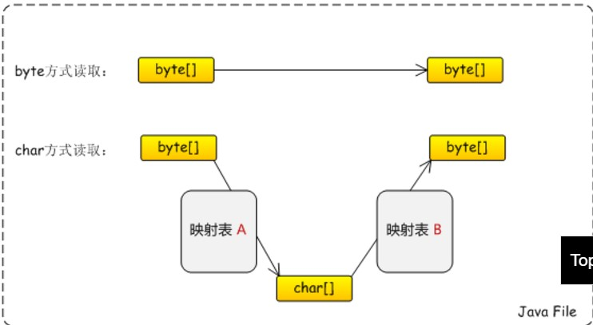

String，byte[]与编码
Posted on 2017-03-12(Sunday) 21:30 in Java
一、 java中byte[]在获取对应的String字符串时出现乱码问题
在java中对string进行编码，解码的过程如下：
原理解析：
- 对于在java中的String来说，String即可看作char[]，在Java中char[]通过
charsetIn字符集映射为byte[]，然后byte[]再按照charsetOut映射为char[].
charset字符集，对应编码方式，可以理解为一张映射表，可以将char映射为byte,也可以将byte映射为char.
二、关于Java中编码方式需要注意的几点？
java中对于编码的要求，方式，字符集，是对于byte[]而言，再通俗点说就是翻译到机器级别的二进制字节代码而言的。
我们所说的编码方式再char[]上是统一的，即再String上为统一的。
三、Java中关于File的编码和解码
Java中关于File的编码和解码的原理和String编码解码有点相似。见下图：

Java中关于文件读写，有Stream流方式和Writer字符方式，可以在这两个已有的概念之上再进一步深化考虑归纳。
根据以上图，可以将Java文件读写再分为两种：
- 按照Byte读取
不难理解，这就是常说的stream流的形式，我觉得再实际当中按这种方式事最省事，最方便的，根据上图也可以知道，再使用这种方式的时候不需要取考虑编码格式。
- 按照char读取
也就是writer,字符读写方式，需要取考虑文件编码方式，在实际应用中不是很方便。
四、分析
关于乱码出现的根本原因，有两种可能：
-
char再charsetIn字符集中不存在,无法找出对应的byte[],只能强制转换为默认byte[].
-
charsetIn与charsetOut不一致。
五、String编码与解码
- 编码:
new String("",charset); - 解码:
String.getBytes(charset);
六、文件的编码与解码
在使用writer/reader方式读写文件时会出现编码解码的问题。
InputStreamReader inputStreamReader = new InputStreamReader(fileInputStream, charsetIn);
OutputStreamWriter outputStreamWriter = new OutputStreamWriter(fileOutputStream, charsetOut);